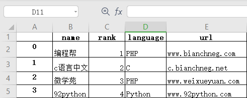

Pandas Excel读写操作详解
Excel 是由微软公司开发的办公软件之一，它在日常工作中得到了广泛的应用。在数据量较少的情况下，Excel 对于数据的处理、分析、可视化有其独特的优势，因此可以显著提升您的工作效率。但是，当数据量非常大时，Excel 的劣势就暴露出来了，比如，操作重复、数据分析难等问题。Pandas 提供了操作 Excel 文件的函数，可以很方便地处理 Excel 表格。
如果想要把单个对象写入 Excel 文件，那么必须指定目标文件名；如果想要写入到多张工作表中，则需要创建一个带有目标文件名的
to_ecxel() 语法格式如下：
下面看一组简单的示例：
示例如下所示：
to_excel()
通过 to_excel() 函数可以将 Dataframe 中的数据写入到 Excel 文件。如果想要把单个对象写入 Excel 文件，那么必须指定目标文件名；如果想要写入到多张工作表中，则需要创建一个带有目标文件名的
ExcelWriter对象，并通过sheet_name参数依次指定工作表的名称。to_ecxel() 语法格式如下：
DataFrame.to_excel(excel_writer, sheet_name='Sheet1', na_rep='', float_format=None, columns=None, header=True, index=True, index_label=None, startrow=0, startcol=0, engine=None, merge_cells=True, encoding=None, inf_rep='inf', verbose=True, freeze_panes=None)下表列出函数的常用参数项，如下表所示：
| 参数名称 | 描述说明 |
|---|---|
| excel_wirter | 文件路径或者 ExcelWrite 对象。 |
| sheet_name | 指定要写入数据的工作表名称。 |
| na_rep | 缺失值的表示形式。 |
| float_format | 它是一个可选参数，用于格式化浮点数字符串。 |
| columns | 指要写入的列。 |
| header | 写出每一列的名称，如果给出的是字符串列表，则表示列的别名。 |
| index | 表示要写入的索引。 |
| index_label |
引用索引列的列标签。如果未指定，并且 hearder 和 index 均为为 True，则使用索引名称。如果 DataFrame 使用 MultiIndex，则需要给出一个序列。 |
| startrow | 初始写入的行位置，默认值0。表示引用左上角的行单元格来储存 DataFrame。 |
| startcol | 初始写入的列位置，默认值0。表示引用左上角的列单元格来储存 DataFrame。 |
| engine | 它是一个可选参数，用于指定要使用的引擎，可以是 openpyxl 或 xlsxwriter。 |
下面看一组简单的示例：
import pandas as pd
#创建DataFrame数据
info_website = pd.DataFrame({'name': ['编程帮', 'c语言中文网', '微学苑', '92python'],
'rank': [1, 2, 3, 4],
'language': ['PHP', 'C', 'PHP','Python' ],
'url': ['www.bianchneg.com', 'c.bianchneg.net', 'www.weixueyuan.com','www.92python.com' ]})
#创建ExcelWrite对象
writer = pd.ExcelWriter('website.xlsx')
info_website.to_excel(writer)
writer.save()
print('输出成功')
上述代码执行后会自动生成 website.xlsx 文件，文件内容如下：

图1：DataFrame转为Excel
图1：DataFrame转为Excel
read_excel()
如果您想读取 Excel 表格中的数据，可以使用 read_excel() 方法，其语法格式如下：
pd.read_excel(io, sheet_name=0, header=0, names=None, index_col=None,
usecols=None, squeeze=False,dtype=None, engine=None,
converters=None, true_values=None, false_values=None,
skiprows=None, nrows=None, na_values=None, parse_dates=False,
date_parser=None, thousands=None, comment=None, skipfooter=0,
convert_float=True, **kwds)
下表对常用参数做了说明：| 参数名称 | 说明 |
|---|---|
| io | 表示 Excel 文件的存储路径。 |
| sheet_name | 要读取的工作表名称。 |
| header |
指定作为列名的行，默认0，即取第一行的值为列名；若数据不包含列名，则设定 header = None。若将其设置 为 header=2，则表示将前两行作为多重索引。 |
| names | 一般适用于Excel缺少列名，或者需要重新定义列名的情况；names的长度必须等于Excel表格列的长度，否则会报错。 |
| index_col | 用做行索引的列，可以是工作表的列名称，如 index_col = '列名'，也可以是整数或者列表。 |
| usecols | int或list类型，默认为None，表示需要读取所有列。 |
| squeeze | boolean，默认为False，如果解析的数据只包含一列，则返回一个Series。 |
| converters | 规定每一列的数据类型。 |
| skiprows | 接受一个列表，表示跳过指定行数的数据，从头部第一行开始。 |
| nrows | 需要读取的行数。 |
| skipfooter | 接受一个列表，省略指定行数的数据，从尾部最后一行开始。 |
示例如下所示：
import pandas as pd
#读取excel数据
df = pd.read_excel('website.xlsx',index_col='name',skiprows=[2])
#处理未命名列
df.columns = df.columns.str.replace('Unnamed.*', 'col_label')
print(df)
输出结果：
col_label rank language agelimit
name
编程帮 0 1 PHP www.bianchneg.com
微学苑 2 3 PHP www.weixueyuan.com
92python 3 4 Python www.92python.com
再看一组示例：
import pandas as pd
#读取excel数据
#index_col选择前两列作为索引列
#选择前三列数据，name列作为行索引
df = pd.read_excel('website.xlsx',index_col='name',index_col=[0,1],usecols=[1,2,3])
#处理未命名列，固定用法
df.columns = df.columns.str.replace('Unnamed.*', 'col_label')
print(df)
输出结果：
language
name rank
编程帮 1 PHP
c语言中文网 2 C
微学苑 3 PHP
92python 4 Python
关注公众号「站长严长生」，在手机上阅读所有教程，随时随地都能学习。内含一款搜索神器，免费下载全网书籍和视频。

微信扫码关注公众号